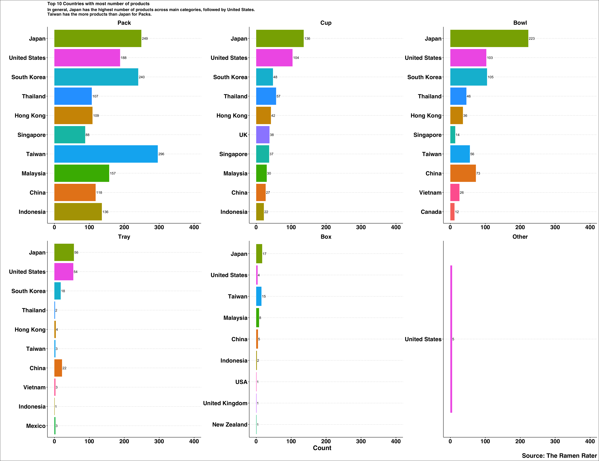
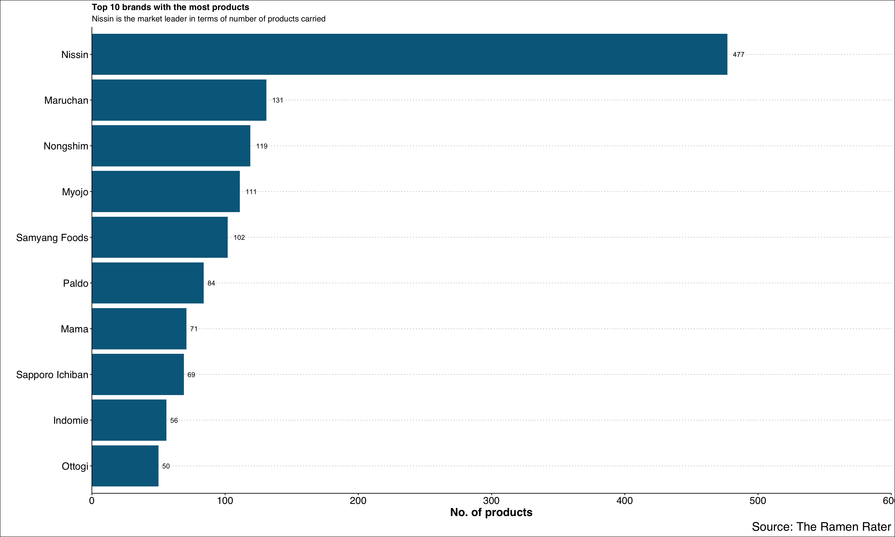
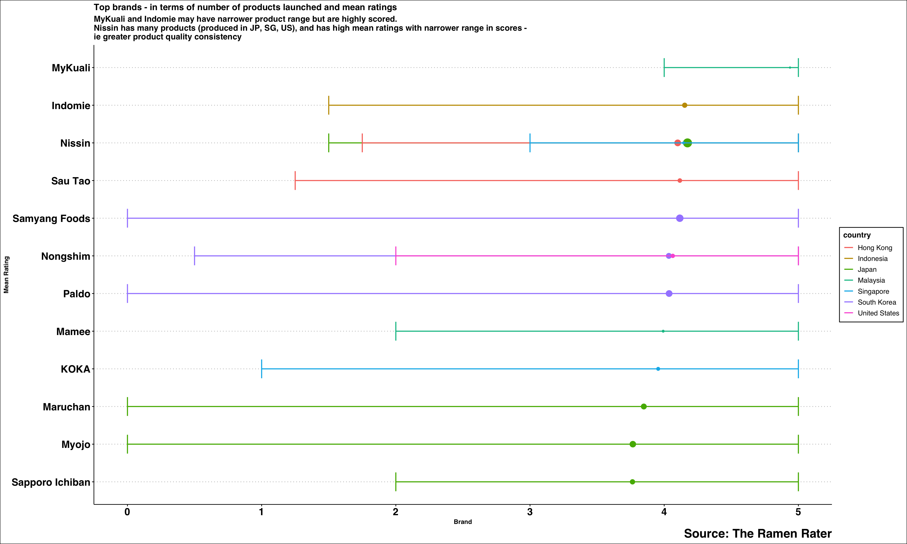
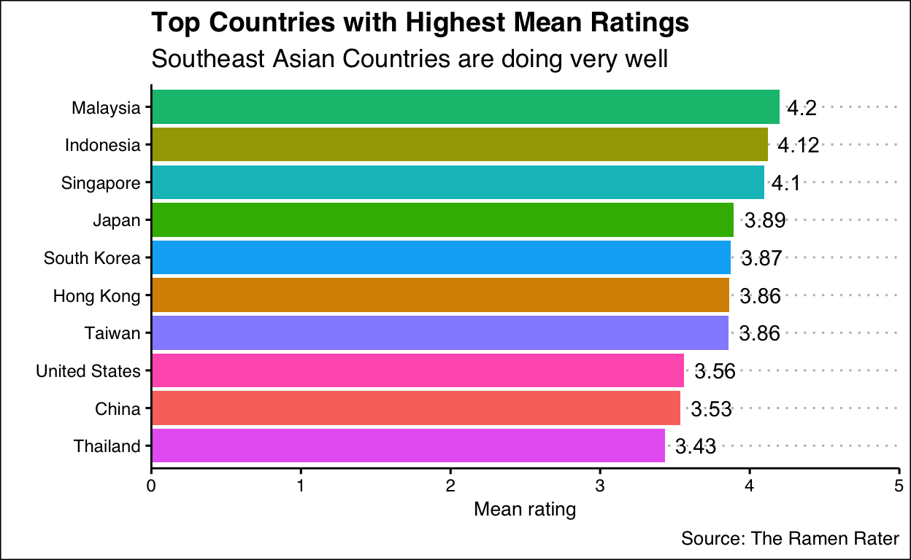

20190614 - Ramen Ratings Data
This ramen dataset was taken from one of the TidyTuesday datasets released in 2019. https://github.com/rfordatascience/tidytuesday/tree/master/data/2019/2019-06-04. I was halfway through the data exploration step, and went into the original source of data at The Ramen Rater https://www.theramenrater.com/resources-2/the-list/, only to realise that there is a even more updated list. As such, I will use the list compiled in 2021 for exploratory work.
The Ramen Rater rates the different ramen (or instant noodles) from different parts of the world. Let’s see what kind of insights we can have from his dataset.
library(tidyverse)
library(ggthemes)
library(skimr)
library(janitor)
library(datapasta)
library(naniar)
library(tidytext)
library(wordcloud2)
# Import data
# Old
ramen_ratings <- read_csv("https://raw.githubusercontent.com/stephen-haslett/FALL2019TIDYVERSE/master/ramen-ratings.csv", show_col_types = F)
glimpse(ramen_ratings)
Rows: 2,580
Columns: 7
$ `Review #` <dbl> 2580, 2579, 2578, 2577, 2576, 2575, 2574, 2573, 2…
$ Brand <chr> "New Touch", "Just Way", "Nissin", "Wei Lih", "Ch…
$ Variety <chr> "T's Restaurant Tantanmen", "Noodles Spicy Hot Se…
$ Style <chr> "Cup", "Pack", "Cup", "Pack", "Pack", "Pack", "Cu…
$ Country <chr> "Japan", "Taiwan", "USA", "Taiwan", "India", "Sou…
$ Stars <chr> "3.75", "1", "2.25", "2.75", "3.75", "4.75", "4",…
$ `Top Ten` <chr> NA, NA, NA, NA, NA, NA, NA, NA, NA, NA, NA, NA, N…# Updated on 17 Jan 2021
updated_ramen_ratings <- readxl::read_xlsx("The-Big-List-20210117.xlsx")
glimpse(updated_ramen_ratings) # more data, to use this instead
Rows: 3,702
Columns: 7
$ `Review #` <dbl> 3702, 3701, 3700, 3699, 3698, 3697, 3696, 3695, 3…
$ Brand <chr> "Higashimaru", "Single Grain", "Sau Tao", "Sau Ta…
$ Variety <chr> "Seafood Sara Udon", "Chongqing Spicy & Sour Rice…
$ Style <chr> "Pack", "Cup", "Pack", "Pack", "Cup", "Cup", "Pac…
$ Country <chr> "Japan", "China", "Hong Kong", "Hong Kong", "Japa…
$ Stars <chr> "5", "3.5", "5", "4.5", "3.5", "4.5", "4", "5", "…
$ T <lgl> NA, NA, NA, NA, NA, NA, NA, NA, NA, NA, NA, NA, N…# Editing raw dataset for use
ramen <- updated_ramen_ratings %>%
clean_names() %>% # changing column names
mutate(brand = factor(brand),
country = factor(country),
style = factor(style)) %>%
select(-t) # used to be top 10, but will remove this since there are no values
glimpse(ramen)
Rows: 3,702
Columns: 6
$ review_number <dbl> 3702, 3701, 3700, 3699, 3698, 3697, 3696, 3695…
$ brand <fct> "Higashimaru", "Single Grain", "Sau Tao", "Sau…
$ variety <chr> "Seafood Sara Udon", "Chongqing Spicy & Sour R…
$ style <fct> Pack, Cup, Pack, Pack, Cup, Cup, Pack, Pack, B…
$ country <fct> Japan, China, Hong Kong, Hong Kong, Japan, Chi…
$ stars <chr> "5", "3.5", "5", "4.5", "3.5", "4.5", "4", "5"…review_number brand variety style country
0 0 0 0 0
stars
0 # brand, variety, style, country, stars, top 10
# 543 different brands
ramen %>%
select(brand) %>%
unique()
# A tibble: 543 × 1
brand
<fct>
1 Higashimaru
2 Single Grain
3 Sau Tao
4 Sapporo Ichiban
5 Sichuan Baijia
6 Nissin
7 Maruchan
8 Yamamoto Seifun
9 Kenko Foods
10 Acecook
# … with 533 more rows# brands with most varieties
ramen %>%
group_by(brand) %>%
summarise(n = n()) %>%
arrange(desc(n))
# A tibble: 543 × 2
brand n
<fct> <int>
1 Nissin 477
2 Maruchan 131
3 Nongshim 119
4 Myojo 111
5 Samyang Foods 103
6 Paldo 84
7 Mama 71
8 Sapporo Ichiban 69
9 Indomie 56
10 Ottogi 51
# … with 533 more rows# top 20 brands with most varieties
ramen %>%
group_by(brand) %>%
summarise(n = n()) %>%
arrange(desc(n)) %>%
slice_head(n = 20) # top 20
# A tibble: 20 × 2
brand n
<fct> <int>
1 Nissin 477
2 Maruchan 131
3 Nongshim 119
4 Myojo 111
5 Samyang Foods 103
6 Paldo 84
7 Mama 71
8 Sapporo Ichiban 69
9 Indomie 56
10 Ottogi 51
11 Acecook 48
12 Sau Tao 48
13 KOKA 39
14 Maggi 38
15 Vifon 36
16 MyKuali 35
17 Lucky Me! 34
18 Mamee 34
19 Vina Acecook 34
20 MAMA 33# which country are these top 20 brands located?
ramen %>%
group_by(brand, country) %>%
summarise(n = n()) %>%
arrange(desc(n)) # 1 brand can be located in different countries
# A tibble: 623 × 3
# Groups: brand [543]
brand country n
<fct> <fct> <int>
1 Nissin Japan 144
2 Nissin United States 115
3 Samyang Foods South Korea 100
4 Nissin Hong Kong 82
5 Paldo South Korea 82
6 Myojo Japan 77
7 Maruchan Japan 65
8 Nongshim South Korea 65
9 Maruchan United States 64
10 Mama Thailand 58
# … with 613 more rowsglimpse(ramen)
Rows: 3,702
Columns: 6
$ review_number <dbl> 3702, 3701, 3700, 3699, 3698, 3697, 3696, 3695…
$ brand <fct> "Higashimaru", "Single Grain", "Sau Tao", "Sau…
$ variety <chr> "Seafood Sara Udon", "Chongqing Spicy & Sour R…
$ style <fct> Pack, Cup, Pack, Pack, Cup, Cup, Pack, Pack, B…
$ country <fct> Japan, China, Hong Kong, Hong Kong, Japan, Chi…
$ stars <chr> "5", "3.5", "5", "4.5", "3.5", "4.5", "4", "5"…# now, look at variety
ramen %>%
group_by(variety) %>%
summarise(n = n()) %>%
arrange(desc(n))
# A tibble: 3,448 × 2
variety n
<chr> <int>
1 Miso Ramen 9
2 Beef 7
3 Chicken 7
4 Yakisoba 7
5 Artificial Chicken 6
6 Vegetable 6
7 Artificial Beef Flavor 4
8 Artificial Spicy Beef 4
9 Chicken Flavor 4
10 Chili Chicken Flavour Noodle Soup 4
# … with 3,438 more rows# variety: different names, may need to clean up to standardize flavor
Variety would mean flavors.
glimpse(ramen)
Rows: 3,702
Columns: 6
$ review_number <dbl> 3702, 3701, 3700, 3699, 3698, 3697, 3696, 3695…
$ brand <fct> "Higashimaru", "Single Grain", "Sau Tao", "Sau…
$ variety <chr> "Seafood Sara Udon", "Chongqing Spicy & Sour R…
$ style <fct> Pack, Cup, Pack, Pack, Cup, Cup, Pack, Pack, B…
$ country <fct> Japan, China, Hong Kong, Hong Kong, Japan, Chi…
$ stars <chr> "5", "3.5", "5", "4.5", "3.5", "4.5", "4", "5"…# 51 different countries
# Japan, USA, South Korea have the most number of products
ramen %>%
group_by(country) %>%
summarise(n = n()) %>%
arrange(desc(n))
# A tibble: 51 × 2
country n
<fct> <int>
1 Japan 684
2 United States 462
3 South Korea 413
4 Taiwan 372
5 China 245
6 Thailand 212
7 Malaysia 208
8 Hong Kong 191
9 Indonesia 161
10 Singapore 140
# … with 41 more rows# singapore has 140 listed products
ramen %>%
filter(country == "Singapore") %>%
arrange(desc(stars))
# A tibble: 140 × 6
review_number brand variety style country stars
<dbl> <fct> <chr> <fct> <fct> <chr>
1 3446 Prima T… Singapore Black Pepper … Pack Singap… 5
2 3210 Prima T… Singapore Prawn Soup La… Pack Singap… 5
3 3196 Prima T… Singapore Chilli Crab F… Pack Singap… 5
4 3096 Prima T… Singapore Black Pepper … Pack Singap… 5
5 2921 Prima T… Singapore Prawn Soup Wh… Pack Singap… 5
6 2882 Miandom Tasty Asia Green Curry … Cup Singap… 5
7 2688 KOKA Silk Laksa Singapura In… Bowl Singap… 5
8 2625 Nissin Cup Noodles Potato Chip… Pack Singap… 5
9 2618 KOKA Delight Curry Flavor In… Pack Singap… 5
10 2617 Nissin Cup Noodles Laksa Flavo… Cup Singap… 5
# … with 130 more rows# Japan has 684 listed products
ramen %>%
filter(country == "Japan") %>%
arrange(desc(stars))
# A tibble: 684 × 6
review_number brand variety style country stars
<dbl> <fct> <chr> <fct> <fct> <chr>
1 3150 Hakubaku Baby Somen Pack Japan NR
2 3149 Hakubaku Baby Udon Pack Japan NR
3 2641 Nanoblock Ramen Bokki Pack Japan NR
4 3702 Higashim… Seafood Sara Udon Pack Japan 5
5 3695 Maruchan Miyashi Chuka Cold Noo… Pack Japan 5
6 3683 Sapporo … Sekai no Yamachan Phan… Tray Japan 5
7 3557 Nakaki F… Salt Yakisoba Pack Japan 5
8 3554 Myojo Vegetable Paitan Tanmen Bowl Japan 5
9 3525 Maruchan Oshima x Tanaka Shoten… Bowl Japan 5
10 3521 Maruchan Sesame Tan Tan Udon Bowl Japan 5
# … with 674 more rows# Taiwan has 372 listed products
ramen %>%
filter(country == "Taiwan") %>%
arrange(desc(stars))
# A tibble: 372 × 6
review_number brand variety style country stars
<dbl> <fct> <chr> <fct> <fct> <chr>
1 3673 Noodles Acco… Fragrant In Origin… Pack Taiwan 5
2 3638 Hi-Lai Foods Lai Noodle Pack Taiwan 5
3 3618 PLN Food Co,… Spicy Paste Noodle Pack Taiwan 5
4 3617 PLN Food Co,… Classic Dry Noodle Pack Taiwan 5
5 3553 Mom's Dry No… Sichuan Spicy Duck… Box Taiwan 5
6 3523 Little Coupl… Dry Noodle Sesame … Pack Taiwan 5
7 3468 Little Coupl… Dry Noodle - Onion Pack Taiwan 5
8 3413 Shin Horng Hon's Dry Noodles … Pack Taiwan 5
9 3392 Wu Mu Mandashi Mala Spic… Box Taiwan 5
10 3390 Eight Field Spicy Peanut Paste… Pack Taiwan 5
# … with 362 more rows# Korea has 413 listed products
ramen %>%
filter(country %in% c("South Korea")) %>%
arrange(desc(stars))
# A tibble: 413 × 6
review_number brand variety style country stars
<dbl> <fct> <chr> <fct> <fct> <chr>
1 2548 Ottogi Plain Instant Noodle… Pack South Ko… Unra…
2 2458 Samyang … Sari Ramen Pack South Ko… Unra…
3 3627 Ottogi Mac & Cheese Spaghet… Bowl South Ko… 5
4 3451 Nongshim Shin Light Air Dried… Pack South Ko… 5
5 3442 Paldo Mr Kimchi Stirfried … Bowl South Ko… 5
6 3429 Paldo Bul Jjamppong Pack South Ko… 5
7 3427 Samyang … Buldak Light Pack South Ko… 5
8 3404 Nongshim Big Gomtang Instant … Bowl South Ko… 5
9 3398 Paldo King Lid Ramen Noodl… Pack South Ko… 5
10 3388 Paldo Big 3 Instant Ramen … Bowl South Ko… 5
# … with 403 more rowsglimpse(ramen)
Rows: 3,702
Columns: 6
$ review_number <dbl> 3702, 3701, 3700, 3699, 3698, 3697, 3696, 3695…
$ brand <fct> "Higashimaru", "Single Grain", "Sau Tao", "Sau…
$ variety <chr> "Seafood Sara Udon", "Chongqing Spicy & Sour R…
$ style <fct> Pack, Cup, Pack, Pack, Cup, Cup, Pack, Pack, B…
$ country <fct> Japan, China, Hong Kong, Hong Kong, Japan, Chi…
$ stars <chr> "5", "3.5", "5", "4.5", "3.5", "4.5", "4", "5"…ramen %>%
count(style) %>%
arrange(desc(n))
# A tibble: 8 × 2
style n
<fct> <int>
1 Pack 2095
2 Bowl 722
3 Cup 659
4 Tray 167
5 Box 54
6 Restaurant 3
7 Bar 1
8 Can 1# A tibble: 0 × 6
# … with 6 variables: review_number <dbl>, brand <fct>,
# variety <chr>, style <fct>, country <fct>, stars <chr># A tibble: 2 × 6
review_number brand variety style country stars
<dbl> <fct> <chr> <fct> <fct> <chr>
1 2513 Pringles Nissin Top Ramen Ch… Can United S… 3.5
2 1155 Komforte C… Savory Ramen Bar United S… 5 # is pringles potato chips? or ramen?
ggplot(ramen, aes(stars)) +
geom_histogram(stat = "count")
# scores are as character format at the moment. need to change to numerical.
ramen$stars %>%
unique()
[1] "5" "3.5" "4.5"
[4] "4" "3.75" "4.25"
[7] "3" "3.25" "4.75"
[10] "2.5" "2" "0.75"
[13] "0" "1.25" "2.75"
[16] "0.5" "1.5" "2.25"
[19] "1" "NS" "0.25"
[22] "NR" "1.75" "3.5/2.5"
[25] "42829" "42860" "4.5/5"
[28] "5/2.5" "42859" "4.25/5"
[31] "Unrated" "1.1000000000000001" "2.1"
[34] "0.9" "3.1" "4.125"
[37] "3.125" "2.125" "2.9"
[40] "0.1" "2.8" "3.7"
[43] "3.4" "3.6" "2.85"
[46] "2.2999999999999998" "3.2" "3.65"
[49] "1.8" ramen %>%
filter(stars == "Unrated")
# A tibble: 3 × 6
review_number brand variety style country stars
<dbl> <fct> <chr> <fct> <fct> <chr>
1 2548 Ottogi Plain Instant Noodle … Pack South Ko… Unra…
2 2458 Samyang … Sari Ramen Pack South Ko… Unra…
3 1587 Mi E-Zee Plain Noodles Pack Malaysia Unra…dirty_stars <- ramen %>%
filter(stars %in% c("0",
"NR", "Unrated",
"NS",
"42829",
"42859",
"42860",
"1.1000000000000001",
"2.2999999999999998"))
# to remove unrated, and na values from dataset,
# replace unrated as "NA" in main dataset, using dplyr
# some noodles had 2 scores: 1 for broth and 1 for noodles, so will take average
ramen_cleaned_a <- ramen %>%
naniar::replace_with_na(replace = list(stars = c("NR",
"NS",
"42829",
"42860",
"42859",
"Unrated"))) %>%
mutate(stars_cleaned_a = str_replace_all(stars, "3.5/2.5", "3")) %>%
mutate(stars_cleaned_b = str_replace_all(stars_cleaned_a, "4.25/5", "4.25")) %>%
mutate(stars_cleaned_c = str_replace_all(stars_cleaned_b, "1.1000000000000001", "1.1")) %>%
mutate(stars_cleaned_d = str_replace_all(stars_cleaned_c, "5/2.5", "3.75")) %>%
mutate(stars_cleaned_e = str_replace_all(stars_cleaned_d, "4.5/5", "4.75")) %>%
mutate(stars_cleaned_f = str_replace_all(stars_cleaned_e, "4.5/5", "4.75")) %>%
mutate(stars_cleaned_g = str_replace_all(stars_cleaned_f, "2.2999999999999998", "2.3")) %>%
select(review_number, brand, variety, style, country, stars_cleaned_g) %>%
rename(flavor = variety,
packaging = style,
stars = stars_cleaned_g) %>%
filter(!is.na(stars)) %>%
mutate(stars = as.numeric(stars))
glimpse(ramen_cleaned_a) # 3692, removed na
Rows: 3,692
Columns: 6
$ review_number <dbl> 3702, 3701, 3700, 3699, 3698, 3697, 3696, 3695…
$ brand <fct> "Higashimaru", "Single Grain", "Sau Tao", "Sau…
$ flavor <chr> "Seafood Sara Udon", "Chongqing Spicy & Sour R…
$ packaging <fct> Pack, Cup, Pack, Pack, Cup, Cup, Pack, Pack, B…
$ country <fct> Japan, China, Hong Kong, Hong Kong, Japan, Chi…
$ stars <dbl> 5.00, 3.50, 5.00, 4.50, 3.50, 4.50, 4.00, 5.00…ramen_cleaned_a
# A tibble: 3,692 × 6
review_number brand flavor packaging country stars
<dbl> <fct> <chr> <fct> <fct> <dbl>
1 3702 Higashi… Seafood Sara Udon Pack Japan 5
2 3701 Single … Chongqing Spicy & S… Cup China 3.5
3 3700 Sau Tao Seafood Flavour Sic… Pack Hong K… 5
4 3699 Sau Tao Jiangnan Style Nood… Pack Hong K… 4.5
5 3698 Sapporo… CupStar Shio Ramen Cup Japan 3.5
6 3697 Sichuan… Big Boss Broad Nood… Cup China 4.5
7 3696 Nissin Top Ramen Masala No… Pack India 4
8 3695 Maruchan Miyashi Chuka Cold … Pack Japan 5
9 3694 Yamamot… Tanukioyaji Super S… Bowl Japan 3.5
10 3693 Kenko F… Michio Kawamura Nat… Pack Japan 3.75
# … with 3,682 more rowsramen_cleaned_a %>%
ggplot(aes(stars)) +
geom_histogram() # not normally distributed. can ramen receive 0?
median(ramen_cleaned_a$stars) # median = 3.75
[1] 3.75mean(ramen_cleaned_a$stars) # mean = 3.73
[1] 3.723226ramen_cleaned_a %>%
count(packaging) %>%
arrange(desc(n))
# A tibble: 8 × 2
packaging n
<fct> <int>
1 Pack 2085
2 Bowl 722
3 Cup 659
4 Tray 167
5 Box 54
6 Restaurant 3
7 Bar 1
8 Can 1# create a new packaging variable to lump low levels together
ramen_cleaned_b <- ramen_cleaned_a %>%
mutate(packaging_cleaned = fct_inorder(fct_lump_n(packaging, 5),
ordered = NA))
# (ramen_cleaned_b$packaging_cleaned)
glimpse(ramen_cleaned_b)
Rows: 3,692
Columns: 7
$ review_number <dbl> 3702, 3701, 3700, 3699, 3698, 3697, 3696, …
$ brand <fct> "Higashimaru", "Single Grain", "Sau Tao", …
$ flavor <chr> "Seafood Sara Udon", "Chongqing Spicy & So…
$ packaging <fct> Pack, Cup, Pack, Pack, Cup, Cup, Pack, Pac…
$ country <fct> Japan, China, Hong Kong, Hong Kong, Japan,…
$ stars <dbl> 5.00, 3.50, 5.00, 4.50, 3.50, 4.50, 4.00, …
$ packaging_cleaned <fct> Pack, Cup, Pack, Pack, Cup, Cup, Pack, Pac…ramen_final <- ramen_cleaned_b
theme_set(theme_clean())
ramen_final %>%
count(packaging_cleaned,country) %>%
arrange(desc(n)) %>%
group_by(packaging_cleaned) %>%
slice_head(n = 10) %>%
ggplot(aes(fct_reorder(country, n), n,
fill = country,
label = n)) +
geom_col(show.legend = F) +
facet_wrap( . ~ packaging_cleaned, ncol = 3, scales = "free") +
ylim(0, 400) +
geom_text(aes(label = n, hjust = -0.1)) +
coord_flip() +
labs(title = "Top 10 Countries with most number of products",
x = "",
y = "Count",
subtitle = "In general, Japan has the highest number of products across main categories, followed by United States. \nTaiwan has the more products than Japan for Packs.",
caption = "Source: The Ramen Rater") +
theme(axis.title = element_text(face = "bold", size = 20),
strip.text = element_text(face = "bold", size = 18),
axis.text = element_text(face = "bold", size = 18),
title = element_text(face = "bold", size = 24))

# top 20 brands with most varieties
ramen_final %>%
group_by(brand) %>%
summarise(n = n()) %>%
arrange(desc(n)) %>%
slice_head(n = 10) %>% # top 10
ggplot(aes(fct_reorder(brand, n), n)) +
geom_col(fill = "deepskyblue4") +
geom_text(aes(label = n), hjust = -0.5) +
scale_y_continuous(expand = c(0,0),
limits = c(0, 600)) +
labs(title = "Top 10 brands with the most products",
x = "",
y = "No. of products",
subtitle = "Nissin is the market leader in terms of number of products carried",
caption = "Source: The Ramen Rater") +
coord_flip() +
theme(axis.title = element_text(face = "bold", size = 18),
axis.text = element_text(size = 16),
title = element_text(size = 24))

data_plot <- ramen_final %>%
group_by(brand, country) %>%
summarise(
count = n(),
mean_rating = mean(stars),
min_rating = min(stars),
max_rating = max(stars)
) %>%
ungroup() %>%
filter(mean_rating > 3.75) %>%
select(country, brand, count, mean_rating, min_rating, max_rating) %>%
arrange(desc(count, mean_rating))
data_plot
# A tibble: 277 × 6
country brand count mean_rating min_rating max_rating
<fct> <fct> <int> <dbl> <dbl> <dbl>
1 Japan Nissin 144 4.17 1.5 5
2 South Korea Samyang Foods 99 4.12 0 5
3 Hong Kong Nissin 82 4.10 1.75 5
4 South Korea Paldo 82 4.04 0 5
5 Japan Myojo 77 3.77 0 5
6 Japan Maruchan 65 3.85 0 5
7 South Korea Nongshim 65 4.03 0.5 5
8 Japan Sapporo Ichiban 55 3.76 2 5
9 Indonesia Indomie 54 4.15 1.5 5
10 Hong Kong Sau Tao 45 4.12 1.25 5
# … with 267 more rowsdata_plot%>%
slice_head(n = 15) %>%
ggplot(aes(fct_reorder(brand, mean_rating), mean_rating, col = country)) +
geom_point(aes(size = count), show.legend = F) +
geom_errorbar(aes(ymin = min_rating,
ymax = max_rating),
width = 0.5, size = 0.8) +
labs(title = "Top brands - in terms of number of products launched and mean ratings",
subtitle = "MyKuali and Indomie may have narrower product range but are highly scored. \nNissin has many products (produced in JP, SG, US), and has high mean ratings with narrower range in scores - \nie greater product quality consistency",
caption = "Source: The Ramen Rater",
x = "Mean Rating",
y = "Brand",
fill = "Country") +
ylim(0, 5) +
coord_flip() +
theme(axis.text = element_text(face = "bold", size = 16),
title = element_text(face = "bold", size = 24))

ramen_final %>%
group_by(country) %>%
summarise(mean_rating = mean(stars),
count = n()) %>%
arrange(desc(count, mean_rating)) %>%
slice_head(n = 10) %>%
ggplot(aes(fct_reorder(country, mean_rating), mean_rating, fill = country,
text = round(mean_rating, 2))) +
geom_col(show.legend = F) +
geom_text(aes(label = round(mean_rating, 2)), hjust = -0.25) +
scale_y_continuous(expand = c(0,0), limits = c(0, 5)) +
coord_flip() +
labs(title = "Top Countries with Highest Mean Ratings",
subtitle = "Southeast Asian Countries are doing very well",
caption = "Source: The Ramen Rater",
x = "",
y = "Mean rating")

ramen_cleaned_a %>%
select(flavor) %>%
distinct()
# A tibble: 3,439 × 1
flavor
<chr>
1 Seafood Sara Udon
2 Chongqing Spicy & Sour Rice Noodles
3 Seafood Flavour Sichuan Spicy Noodle
4 Jiangnan Style Noodle - Original Flavour
5 CupStar Shio Ramen
6 Big Boss Broad Noodle Chili Oil Flavor (Sour & Hot)
7 Top Ramen Masala Noodles
8 Miyashi Chuka Cold Noodle
9 Tanukioyaji Super Spicy Mazemen
10 Michio Kawamura Nature Ramen Shio
# … with 3,429 more rowsramen_cleaned_a
# A tibble: 3,692 × 6
review_number brand flavor packaging country stars
<dbl> <fct> <chr> <fct> <fct> <dbl>
1 3702 Higashi… Seafood Sara Udon Pack Japan 5
2 3701 Single … Chongqing Spicy & S… Cup China 3.5
3 3700 Sau Tao Seafood Flavour Sic… Pack Hong K… 5
4 3699 Sau Tao Jiangnan Style Nood… Pack Hong K… 4.5
5 3698 Sapporo… CupStar Shio Ramen Cup Japan 3.5
6 3697 Sichuan… Big Boss Broad Nood… Cup China 4.5
7 3696 Nissin Top Ramen Masala No… Pack India 4
8 3695 Maruchan Miyashi Chuka Cold … Pack Japan 5
9 3694 Yamamot… Tanukioyaji Super S… Bowl Japan 3.5
10 3693 Kenko F… Michio Kawamura Nat… Pack Japan 3.75
# … with 3,682 more rows# tidytext::unnest_tokens to split flavor into words ----
tidy_flavor <- ramen_cleaned_a %>%
mutate(flavor2 = flavor) %>%
unnest_tokens(word, # output column to be created as string
flavor) %>% # input column to be split)
group_by(word) %>%
count() %>%
arrange(desc(n)) %>%
anti_join(stop_words) %>%
filter(!word %in% c("noodle", "ramen", "instant", "flavor", "flavour",
"noodles", "soup", "cup", "artificial", "style", "bowl", "mi",
"sauce")) %>%
ungroup() %>%
filter(n>1)
tidy_flavor
# A tibble: 923 × 2
word n
<chr> <int>
1 chicken 419
2 spicy 414
3 beef 314
4 hot 189
5 curry 188
6 rice 178
7 tom 152
8 shrimp 151
9 pork 140
10 seafood 140
# … with 913 more rows# top flavors are chicken, spicy, beef/
# look at bigrams
# bigrams
tidy_bigrams <- ramen_cleaned_a %>%
unnest_tokens(bigram, flavor, token = "ngrams", n = 2) %>%
separate(bigram, c("word1", "word2"), sep = " ") %>%
filter(!word1 %in% c(stop_words$word)) %>%
filter(!word2 %in% c(stop_words$word)) %>%
count(word1, word2, sort = T) %>%
drop_na() %>%
filter(!word1 %in% c("noodle", "ramen", "instant", "flavor", "flavour",
"noodles", "soup", "cup", "artificial", "style", "bowl", "mi",
"sauce")) %>%
filter(!word2 %in% c("noodle", "ramen", "instant", "flavor", "flavour",
"noodles", "soup", "cup", "artificial", "style", "bowl", "mi",
"sauce")) %>%
filter(n>5) %>%
unite("joined_flv", word1:word2, sep = " ")
tidy_bigrams
# A tibble: 105 × 2
joined_flv n
<chr> <int>
1 tom yum 107
2 hot spicy 63
3 spicy beef 52
4 rice vermicelli 47
5 chow mein 41
6 spicy chicken 34
7 white curry 32
8 tom yam 31
9 hot sour 28
10 sesame oil 26
# … with 95 more rowswordcloud2(data = tidy_bigrams)
Bigrams offer more information: hot and spicy, rather that hot, spicy.
Ramen rater seems to like spicy instant noodles!
https://casualinference.netlify.app/2019/06/04/tidytuesday-ramen-ratings/ https://beta.rstudioconnect.com/content/5291/tidytuesday-ramen.nb.html https://rstudio-pubs-static.s3.amazonaws.com/502700_3ee879f2e94f4d1da5696be52b9e6107.html